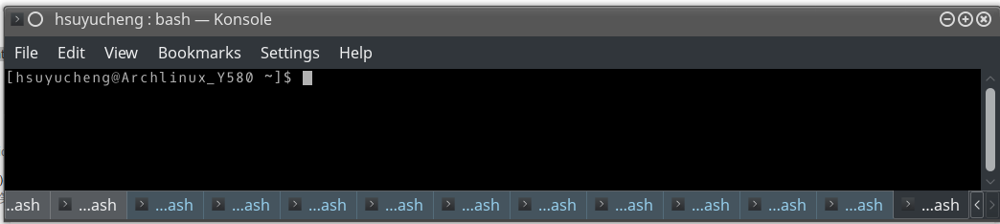
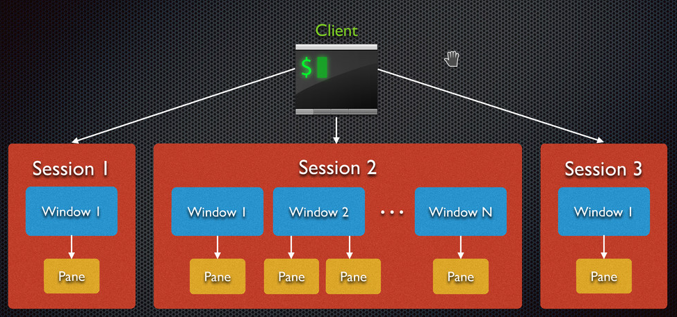
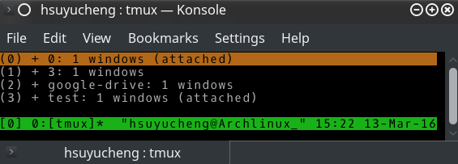

tmux
Knight Yu
knighthsuyucheng@gmail.com
2016-03-13
1 Scenario
- I need more consoles!
- compile
- vim
- use mouse to copy/paste messages between terminals
- repeat setup/environment in terminal
- ssh login

Figure 1: many terminals
2 tmux
- a terminal multiplexer
- a client-server architecture
- similar GNU Screen
- memory usage: screen >> tmux
- features
- persistence
- quick change session
- shared sessions (pair programming)
- window-splitting
2.1 What is Terminal Multiplexer
- “A terminal multiplexer is a software application that can be used to multiplex several virtual consoles, allowing a user to access multiple separate terminal sessions inside a single terminal window or remote terminal session.”
2.2 tmux Install
refer your distribution
- Archlinux
$ sudo pacman -S tmux
- Debian/Ubuntu: apt-get install tmux
$ sudo apt-get install tmux
- Redhat (centos/fedora)
$ sudo dnf install tmux # or $ sudo yum install tmux
- Mac
# use brew $ brew install tmux # use MacPorts $ port install tmux
- Windows Cygwin
- clink tmux via package manager
2.3 tmux Client-Server Architecture

Figure 2: client-server
2.4 tmux View
trigger tmux via tmux command
$ tmux
- session: terminal of tmux
- window: terminal of session
- pane (pannnel): terminal of window

Figure 3: tmux session list
2.4.1 tmux Window Pane View

Figure 4: tmux Window Pane View
2.5 Flexible Session / Window / Pane Windows Manager
- [prefix] key: default is "ctrl b"
- tmux command mode: default is "[prefix] :"
- enter your command to control tmux
2.5.1 Tmux Command (Bash/Zsh, …, in Terminal)
| Describe | Command |
|---|---|
| start tmux and create new session | tmux |
| list sessions | tmux ls |
| enter tmux and use last session | tmux attach |
| enter tmux and restore <session-id> | tmux attach -t <session-id> |
| kill <session-id> | tmux kill-session -t <session-id> |
| kill all sessions | tmux kill-session -a |
| detach <session-id> | tmux detach -t <session-id> |
| detach <session-name> | tmux detach -s <session-name> |
2.5.2 tmux Session Control
| Describe | tmux command mode | Command |
|---|---|---|
| create new session | new | N/A |
| create new session, and set name | new -s <name> | N/A |
| list keybinding | list-keys | [prefix] ? |
| rename session | rename-session 'name' | [prefix] $ |
| list sessions | choose-tree | [prefix] s |
| next session | switch-client -p | [prefix] ( |
| previous session | switch-client -n | [prefix] ) |
| deattach session | detach-client | [prefix] d |
| find string in all window | find-window 'string' | [prefix] f |
2.5.3 tmux Windon Control
| Describe | tmux command mode | Command |
|---|---|---|
| list window | choose-window | [prefix] w |
| create new window | new-window | [prefix] c |
| rename window | rename-window 'name' | [prefix] , <name> |
| select last window | last-window | [prefix] l |
| close window | kill-window | [preifx] & |
| next window | next-window | [prefix] n |
| previous window | previous-window | [prefix] p |
| select windows <0-9> | select-window -t :=<0-9> | [prefix] <0-9> |
| select window via name | choose-window | [prefix] w <name> |
2.5.4 tmux Pane Control
| Describe | tmux command mode | Command |
|---|---|---|
| show and select pane numbers | display-panes | [prefix] q |
| split vertical | split-window | [prefix] " |
| split horizontal | split-window -h | [prefix] % |
| Max/Restore Pane | resize-pane -Z | [prefix] z |
| Pane->Window | break-pane | [prefix] ! |
| kill pane | kill-pane | [prefix] x |
| reorganize (change layout) | next-layout | [prefix] <space> |
| select/switch pane | select-pane -<U/L/D/R> | [prefix] <arrow> |
| select-pane -t | [prefix] o | |
| previous pane | swap-pane -U | [prefix] { |
| next pane | swap-pane -D | [prefix] } |
2.5.5 tmux Copy Control
| Describe | tmux command mode | Command |
|---|---|---|
| enter copy mode | copy-mode | [prefix] [ |
| exit copy mode | N/A | q |
| qoto line | N/A | g |
| scroll up/down/ | N/A | <arrow> |
| move cursor up/down/left/right | N/A | ctrl p/n/b/f |
| search word | N/A | ctrl s |
| mark on | N/A | ctrl <space> |
| copy mark area to buffer | N/A | alt w |
| display buffer0 contents | show-buffer | N/A |
| Show all buffers | list-buffers | N/A |
| choose buffer | choose-buffer | N/A |
| deletct buffer | delete-buffer -b <bufferid> | N/A |
| paste buffer (exit copy mode) | N/A | [prefix] ] |
2.5.6 tmux Misc Control
| Describe | tmux command mode | Command |
|---|---|---|
| reload config | source-file $HOME/.tmux.conf | N/A |
2.6 tmux Configuration
- config location:
- $HOME/.tmux.conf
- /etc/tmux.conf
- common used command
- set-option: set option contain status line
- set-window-option: set option of winodw
- bind-key: custom keybord shortcuts
- copy data into system clipboard
2.6.1 Useful Setting
change scrollback lines
set -g history-limit 20000
assign prefix key
unbind C-b set -g prefix M-C-b
switch emacs/vim key binding
set-option mode-keys vi set-option status-keys vi # emacs keybinding is default # set -g mode-keys emacs # set-option status-keys emasc
set 256 coloers
# enable 256 coloers in your shell environment echo "export TERM='xterm-256color'" > ~/.bashrc
set -g default-terminal "screen-256color"
enable mouse scroll
set -g terminal-overrides 'xterm*:smcup@:rmcup@' #set -g mode-mouse on <-- issue
enable mouse select pane
set-option -g mouse-select-pane on
enable mouse resize pane
set -g mouse-resize-pane on
reload config when you change configuration
# bind a reload key bind R source-file ~/.tmux.conf ; display-message "Config reloaded.."
3 tmux v.s. GNU Screen
| Feature | tmux | Screen |
|---|---|---|
| Multiplexing | v | v |
| Persistence | v | v |
| Shared Sessions | v | v |
| Client/Server System | v | |
| Synchronize-panes | v | |
| Window-splitting | v | |
| Zmodem transfers | V | |
| Attaching to a serial tty | v | |
| Line-wrapping | v | |
| Loggind (outdated) | v | |
| License | BSD | GPL |
| Memory usage | smell | large |
4 Advance
4.1 tmuxifier
- Tmuxify your Tmux. Powerful session, window & pane management for Tmux
4.2 Synchronize Panes
- enter tmux command mode
- enter "set synchronize-panes on"
- enter "set synchronize-panes off" to disable
4.3 Vim Configure
4.3.1 fix issue via modify vim config
fix color issue
if exists('$TMUX') set term=screen-256color endiffix CursorShape issue
if exists('$ITERM_PROFILE') if exists('$TMUX') let &t_SI = "<Esc>[3 q" let &t_EI = "<Esc>[0 q" else let &t_SI = "<Esc>]50;CursorShape=1x7" let &t_EI = "<Esc>]50;CursorShape=0x7" endif end
4.3.2 stop auto indentation if paste
" for tmux to automatically set paste and nopaste mode at the time pasting (as happens in VIM UI)
function! WrapForTmux(s)
if !exists('$TMUX')
return a:s
endif
let tmux_start = "<Esc>Ptmux;"
let tmux_end = "<Esc>"
return tmux_start . substitute(a:s, "<Esc>", "<Esc><Esc>", 'g') . tmux_end
endfunction
let &t_SI .= WrapForTmux("<Esc>[?2004h")
let &t_EI .= WrapForTmux("<Esc>[?2004l")
function! XTermPasteBegin()
set pastetoggle=<Esc>[201~
set paste
return ""
endfunction
inoremap <special> <expr> <Esc>[200~ XTermPasteBegin()
4.3.3 mouse issue
ttymouse=xterm # or ttymouse=xterm2